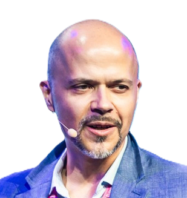
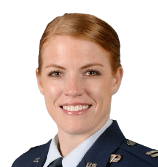

I'm an Electrical and Computer Engineering student at the United States Air Force Academy studying with
a focus in robotics. I believe that every human being has a natural right to see, hear, move, and fully experience
the richness of life. I intend to create a future where neurotechnology not only reclaims these experiences for
those who have lost them but also provides miracles that expand what it means to be human.
My unwavering passion has driven me to continuously expand my knowledge and refine my skills across a wide range of disciplines,
including robotics, computer engineering, electrical engineering, biomedical engineering, and neuroscience. Yet, the challenges
of human-computer interfaces extend beyond any single individual. Recognizing this, I’ve focused on developing strong
leadership and organizational skills, with the goal of uniting researchers worldwide around a common purpose. By integrating these
diverse areas of expertise, I aspire to pioneer the development of advanced neuroprosthetics that embody my vision for a transformative future.
Academic advisor for Jake's studies at the United States Air Force Academy.

Dr. László Jeni
Computational Behavior (CUBE) lab director. Advisor and mentor to Jake on Computer Vision.
Dr. Chad Mello
Advisor to Jake at United States Air Force Academy on Brain Computer Interfacing.

Lt Col Kelli DeBock
Commander of Cadet Squadron 15 - Jake's squadron at United States Air Force Academy.
Resume
Education
U.S. Air Force Academy
2022 — 2026 (Expected)
B.S. in Electrical and Computer Engineering. Overall GPA: 3.99. Overall Order of Merit: 1/1071. Major GPA: 4.0.
Experience
Carnegie Mellon Robotics Institute Summer Scholar
Summer 2025
Conducted research in the CUBE Lab under Dr. László Jeni, focusing on neurotechnology and graduate-level collaborative research.
BCI SSVEP Filtering Researcher
Spring 2025
Developed novel filtering methods for neural signal extraction under Dr. Chad Mellow at USAFA.
MITRE eCTF Embedded Systems Competitor
Spring 2025
Designed secure embedded systems, focusing on encryption protocols, firmware analysis, and communication optimization.
Drone Range Extension Team Lead
Fall 2024 — Present
Led team developing low-power video repeaters and mesh interior navigation under MIT Lincoln Lab and SOCOM Ignite.
Neuromorphic Visual Processing Researcher
Fall 2024
Used Nengo to simulate visual pathways using biologically inspired neuromorphic computing models.
Wearable Technology Researcher
Summer 2024
Designed gait analysis tools using PCA, DBSCAN, and neural networks at Sandia National Laboratories. Presented at Corona Conference.
Quanser Autonomous Vehicle Developer
Spring 2024
Built autonomous vehicle with PID control and camera vision in ROS for urban lane and traffic light navigation.
Leadership
Cadet Wing Commander, USAFA
Fall 2025
Highest-ranking cadet, commanding 4,400 cadets, responsible for their welfare, training, and organizational effectiveness.
Squadron Senior Enlisted Leader
Fall 2024
Mentored 120 cadets; ranked top squadron mid-semester; advised squadron commander on training and readiness.
AM-490 Senior Enlisted Leader
Fall 2024
Directed the development and execution of jump training for over 200 students, ensuring safety, performance, and readiness
Wing Tutoring Cadet in Charge
Spring 2023 — Present
Managed tutoring operations in ECE; personally conducted 100+ hours of tutoring across STEM disciplines.
Awards & Honors
Goldwater Scholarship Nominee
Spring 2025
One of four cadets nominated by USAFA for prestigious national STEM research scholarship.
STAMPS Foundation Leader-Scholar Scholarship
2024 — Present
Received $22,000 research scholarship to pursue neurotechnology innovations in vision support.
Wing Top Performing Senior Enlisted Leader
Fall 2024
Personally recognized by the Commandant of Cadets, a Brigadier General overseeing cadet operations, for exceptional leadership and performance. Selected as the top Senior Enlisted Leader from a competitive field of 40 cadets
Department of Faculty C2C Research Award
Summer 2024
Honored by the Dean of Faculty for conducting the most impactful cadet-led research among all summer research programs undertaken by C2Cs (juniors in college) at USAFA
Martinson Honors Program Scholar
2022 — Present
Selected for USAFA’s premier academic enrichment program, providing an advanced, rigorous curriculum to promote critical thinking, analysis, and intellectual development. Seminar-style advanced academic honors program
Dean’s Ace/A-Team List
5 Semesters
Achieved perfect 4.0 GPA across academics and PE; top academic distinction awarded to select cadets.
Extracurricular Activities
Boxing Team Competitor
Spring 2025
Competed in the Wing Open boxing tournament; reached semifinals through daily training.
Wings of Blue Parachuting Team
Summer 2024 — Present
Member of the U.S. Air Force’s elite parachuting team; instructor for over 200 students and demonstrator in public events.
Wing SPARK Innovation Program
Fall 2024 — Present
Member of cadet innovation team focused on academy-wide improvements and operational enhancements.
Leadership and Learning Lab Volunteer
Fall 2023 — Present
Mentor to underserved elementary students in Colorado Springs through weekly engagement.
I’ll start by saying, I’ve always tried to keep track of those stories and experiences that cause me to stop and observe momentarily. Those elusive moments that feel a little bit deeper than can be captured by a camera or a microphone. Those moments that strike a chord which can only be experienced by the human spirit. I believe those moments, whether grand or small, bright or dark, are the reason we wake to see another day. We should all be driven by the celebration of beauty and excellence in the world. An eternal race to capture a beautiful moment. The photographer and a new perspective. The scientist and a new discovery. The student and a consistent mark. The athlete and a new record. But it isn’t achievement that makes those moments special. It's the reflection they caste of something we can all relate to. Sadness and joy...anger and peace...heartache and bliss...hatred and love.
And what's more, these are all found in the daily experience. In the birth of a child. The sun rise and sun set. The coy smile of stranger. The first time a child walks. The warm embrace of a relative. The last drive with your friends down a nostalgic road before life takes you in different directions. I am reminded of the scene Lois Lowry paints in the Giver when Jonas releases the memories to the community. The film portrays it as a flash of experience in the character’s minds. I like this illustration, because the scenes of human experience are not uncommon, but those small, beautiful moments. I argue that we should not take these for granted, not let them go unnoticed, but instead hold them close as a driving force in each of our lives - perpetuating the beauty and excellence of that which we call the human experience. Let them be that which they are.
Regardless, I am starting this blog because I have always tried to record those moments - quotes, scenes, moments in documentaries, that strike a little deeper and that I don’t want to forget. As I prepare for my role in the fall as wing commander, I have spent a lot of time reflecting on these moments, and how I can share them in a way that strikes that same chord as it did for me as inspiration.
I’ll try to post daily the stories and musings that I have, whether thought of or seen. From scientific research on neuroprosthesis to the most intimate details in art. Inspired by all of the wonderful people I have met and the challenging problems I have faced. Consider this a ‘knowledge reservoir’ of sorts to keep track of all my lessons learned.
Harnessing Music
This one will probably be a little bit shorter, but I just wanted to talk about a trend I’ve started to observe in my life over the recent semester. First, I need to paint the picture:
As I sit here and write, I listen to indie folk on an album on Spotify called “My Life is a Movie.”
Before any interview, I listen to Space Song by Beach House and Helplessness Blues by Fleet Foxes.
While on a run, I listen to 180 BPM EDM music and remixes.
While lifting, I listen to 2010s rap hits.
While researching, I listen to smooth instrumental jazz or French Cafe music.
While in the car, I listen to a playlist that my friends and I created in high school (I’ll talk about my friends and the special bond we had in the following article - that may need to be a series on second thought)
I listen to 6 Foot 7 Foot by Lil Wayne to get hyped up.
You probably know where I’m going with this now, but let me provide more details. Since I started this, I’ve noticed that I can use music to harness and move my thoughts exactly when needed. Before an interview, I need to put my brain into a mode of reflection and intellect; I do that by listening to Space Song, which evokes a bit of sadness and pure nostalgia. Breaking it down, the song can do this because of the strong use of reverb and echo, the minor keys and modal progression, the slow tempo, the airy and distant vocals, and the simplicity. Together, these musical paradigms can inspire a corresponding spirit in the listener’s mind.
My mind immediately wonders to memories with friends, moments in my life that I felt have been truly impactful, my family and teachers who taught me so much, my failures and regrets, the many tears I’ve cried, but also the many smiles I’ve worn, the faces of those I love, and the words of those I cherish (I’m listening to it right now haha if you couldn’t notice). But that is precisely the mood and state of mind you need to be in to crush an interview beside yourself.
But then, to hype myself up, I listen to music that embodies just the opposite. A bass that rattles your brain, fast-paced lyrics, all almost sustained build-up, the kind of mob chant, and long, unbroken streams.
I guess I’m arguing that the diverse genres and concepts of music theories can be used and implemented into your life in such a way as to gain control of your very mind. To never feel like you are in the wrong mood – tired, sad, too pumped up, etc. Go into a quiet place and listen; let the music carry you. It’s almost a sort of neurotechnology, haha (to connect things). Music is a stimulant that can take us to new heights, so I thought I would share my experience.
To take it further, the actual skill would be to possess this ability without music as a stimulant. I believe music is a good way to put on the training wheels and practice the ability to wield your emotions as a weapon for control. Alright, I gotta get back to work, until tmr!